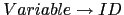

SimpleC para introducir el tipo de datos struct.
Complete el análisis sintáctico.
type_specifier:
basictype
| struct
;
struct:
'struct' ID '{' struct_decl_list '}'
| 'struct' ID
;
struct_decl_list: (type_specifier declList ';') +
;
Recuerde que:
declList: (ID arraySpec) <%+ ','> ;
declaration:
declaration:
%name DECLARATION
$type_specifier $declList ';'
;
También es necesario modificar Variable:
Variable:
ID
| Variable ('[' binary ']')
| Variable '.' ID
;
Sigue un ejemplo de derivación generando una variable de la forma
a[i].x[4].b:
Variable => Variable.ID => Variable[binary].ID => Variable.ID[binary].ID => Variable[binary].ID[binary].ID => ID[binary].ID[binary].ID
Veamos otro ejemplo de derivación generando una variable de la forma
a[i].x[4]:
Variable => Variable[binary] => Variable.ID[binary] => Variable[binary].ID[binary] => ID[binary].ID[binary]
struct.
Un registro es similar al producto cartesiano (usado en las expresiones de tipo de las funciones),
sólo que los campos tienen nombres. Asi:
struct row {
int address;
char lexeme[10];
} table[100];
la expresión de tipo para struct row podría ser:
STRUCT_row(address, INT, lexeme, A_10(CHAR))
o bien:
STRUCT_row(X_2(address, INT), X_2(lexeme, A_10(CHAR)))
Como se ve en el ejemplo el identificador de campo (address, lexeme)
forma parte de la descripción del tipo.
struct produce una cierta sobrecarga de identificadores.
El siguiente programa es correcto:
1 struct x {
2 int z;
3 int b;
4 } x;
5
6 main() {
7 x;
8 }
Aqui x es usado como nombre de un tipo y como nombre de variable. Plantee soluciones
al problema del almacenamiento en la tabla de símbolos. Una posibilidad es que la entrada
en la tabla de símbolos para el tipo sea struct x mientras que para la variable es x.
struct
puede hacerse de manera similar a como ha sido ilustrado en las prácticas anteriores.
Otra cosa son los identificadores de campo.
Por ejemplo en
a[i+j].x = 4;
Es necesario calcular que a[i+j] tiene tipo struct
y comprobar en ese momento que dicha struct
tiene un campo x que es de tipo int.
Hasta que no hemos calculado el tipo asociado con la
expresión a[i+j] no sabemos si el uso de
x es legal o no. Realmente el ámbito del identificador x no
se hace en tiempo de análisis de ámbito sino en tiempo de comprobación de tipos.
El cálculo del ámbito para estos identificadores de campo
se mezcla con el cálculo de tipos. En cierto modo el uso de x
en a[i+j].x = 4 forma parte de la descripción del tipo:
STRUCT_point(X_2(x, INT), X_2(y, INT))
Por tanto en las reglas de Variable:
Variable:
ID
| Variable ('[' binary ']')
| Variable '.' ID
;
A estas alturas solo estamos en condiciones de asociarle su definición al
identificador principal, esto es, al de la regla

.
Los demás deberán esperar a la fase de análisis de tipos.
param para determinar si es un parámetro,
o una referencia a la tabla de símbolos de la funcion en el caso de las funciones). Esto era suficiente
porque sólo teniámos dos tipos de identificadores: los de variable y los de función. Ahora que tenemos
tres tipos: funciones, variables y tipos es conveniente añadir un atributo kind que guarde
la clase de objeto que es.
struct no declarados). Por ejemplo,
el siguiente programa:
1 struct x {
2 struct y z;
3 int b;
4 } w;
5
6 struct y {
7 int a;
8 };
produce un mensaje de error:
prueba1.c:2: error: field ‘z’ has incomplete typeEsto impide definiciones recursivas como:
1 struct x {
2 struct y z;
3 int b;
4 } w;
5
6 struct y {
7 struct x a;
8 };
A estas alturas del análisis estamos en condiciones de comprobar que no existan usos de declaraciones no definidas.
struct aunque no pueden
devolver un array ni una función. Si que pueden sin embargo devolver
un punero a un array o a una función.
La restricción que imponemos de que el tipo retornado sea un tipo básico no significa que necesariamente la regla sintáctica deba especificar tal condición.